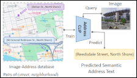
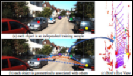
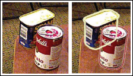
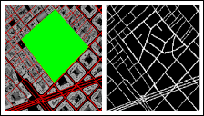
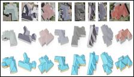
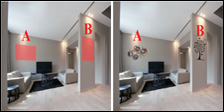
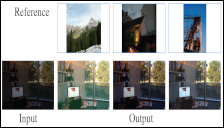
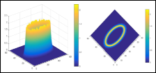
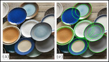

2024

2022


6D Object Pose Estimation in Cluttered Scenes from RGB Images
Xiaolong Yang, Xiaohong Jia, Yuan Liang, Lubin Fan
Journal of Computer Science and Technology, 2022.
[paper]
A Topography-Aware Approach to the Automatic Generation of Urban Road Networks
Zhou Fang, Jiaxin Qi, Lubin Fan, Jianqiang Huang, Ying Jin, Tianren Yang.
International Journal of Geographical Information Science,
Vol. 36, No. 10, pp. 2035-2059, 2022.
[paper]

A Framework for Human-Computer Interactive Street Network Design Based on a Multi-Stage Deep Learning Approach
Zhou Fang, Jiaxin Qi, Lubin Fan, Jianqiang Huang, Ying Jin, Tianren Yang.
Computers, Environment and Urban Systems, 2022.
[paper]
2021


DecorIn: An Automatic Method for Plane-based Decorating
Yuan Liang, Lubin Fan, Peiran Ren, Xuansong Xie, Xian-Sheng Hua.
IEEE Transactions on Visualization and Computer Graphics (TVCG), Vol. 27, No. 8, pp. 3438-3450, 2021.
[paper]



Combining Convex Hull and Directed Graph for Fast and Accurate Ellipse Detection
Zeyu Shen, Mingyang Zhao, Xiaohong Jian, Yuan , Lubin Fan, Dong-Ming Yan.
Graphical Model, Article 116, 2021.
[paper]
2020

2019

2018

2016

2014

2013

2012


2011

iCutter: A Direct Cut Out Tool for 3D Shapes
Min Meng,
Lubin Fan and Ligang Liu.
Journal of Computer Animation and Virutal Worlds,
Vol. 22, No. 4, pp. 335-342, 2011.
[project page]
[paper]
[video]
[slides]